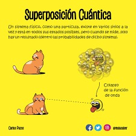

Fenomeno 2.
La superposicion cuantica es el proceso que ocurre a todos los objetos cuanticos,en el que no se puede saber la hubicacion exacta del objeto.Esta ligada al principio de indeterminacion de hisemberg,el cual dicta que es imposible saber la velocidad exacta de un objeto cuantico ni su posicion al mismo tiempo.Curiosamente,este principio es la causa de que los objetos cuanticos no puedan permanecerse quietos,pues esto haria que se conociese la velocidad y la posicion al mismo tiempo .
Nicolas Pulido Pamia 3ESOC.